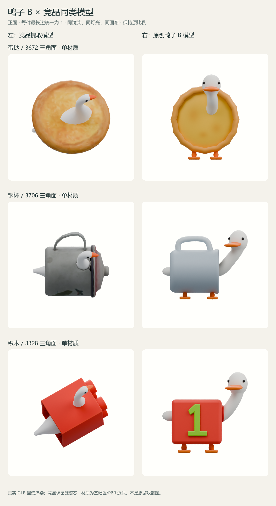
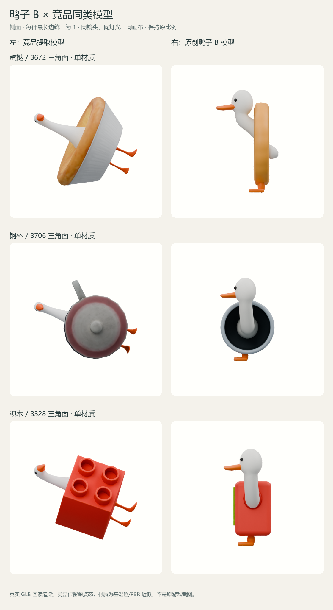
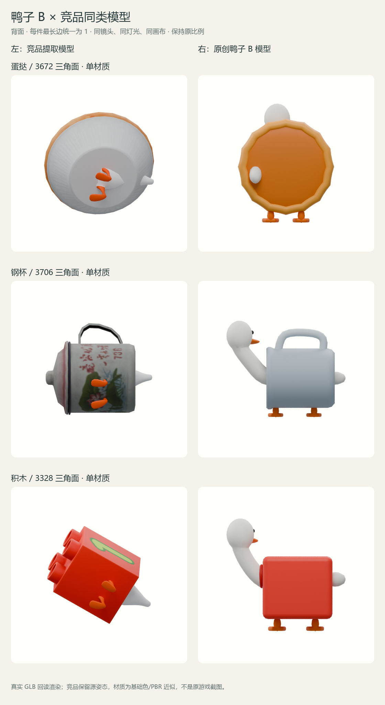

实际模型评审 / 2026-10-25 / B 母版已获确认蛋挞鸭、钢杯鸭、积木鸭
与竞品同类模型，按同尺寸比较。
造型验收未通过 · 仅保留问题对照
每组左侧为竞品提取模型，右侧为原创鸭子 B。全部从实际 GLB 回读渲染，最长边统一为 1，包围盒居中，保持原比例；同视角使用相同正交镜头、灯光和分辨率，未按各自轮廓单独放大。
竞品保留源模型保存姿态，基础色/PBR 材质为提取近似，未还原原游戏 Shader。此处验收的是模型效果与占形；尚未完成 Unity 导入、运行时碰撞、三消或手机性能验收。
其他视角
正面

侧面

背面

模型交付
三款均为单网格、单材质、单 primitive、256px 配色图集，GLB 均小于 90 KiB。另含离线凸包代理及报告；这不代表运行时物理验证通过。
这轮请验收
鸭子头嘴与细长颈部是否符合 B；三种外壳的融合、比例、同尺寸占宽和俯视辨识是否合适。请在聊天里直接给出逐件意见，本轮先停在这三款模型验收。
未改正式首页、主题或历史竞品资料。其余17款未制作。